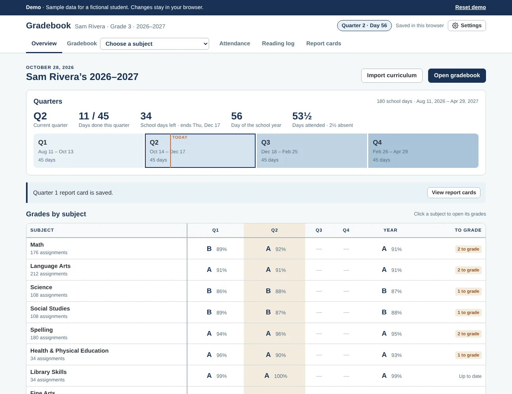
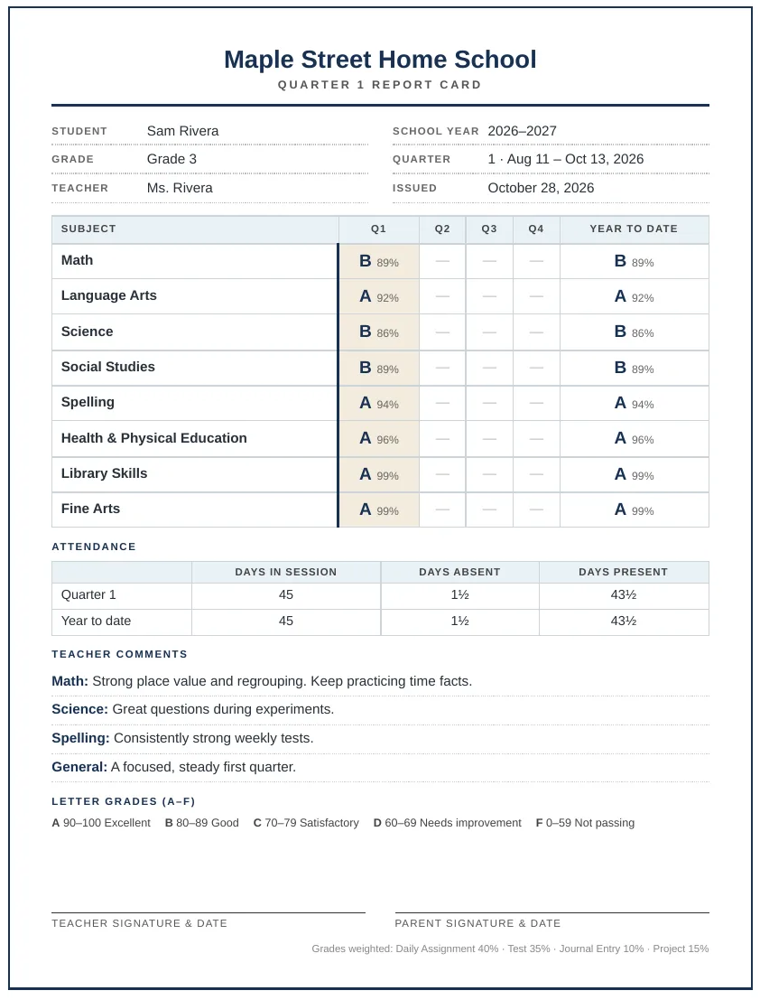

AI-05In use
Homeschool Gradebook & Records
A gradebook and records system for a family homeschool, built for two adults who share the school day. It turns a first day and a number of school days into a calendar with quarters, reads the year's curriculum workbooks to schedule every lesson and test, and keeps grades, attendance, and a reading log in one place. Report cards and records print on letter paper for the state-required portfolio. It runs as a sign-in web app with a private cloud database, so both adults see the same gradebook on any device.
- Domain
- Education records, portfolio documentation
- Data protection
- Email sign-in, members-only row-level security, conflict-checked saves
- Delivered as
- Web app on GitHub Pages with a Supabase database, letter-size PDF output, offline single-file edition
What testing caught: run against the real spelling workbook, the first importer found 45 tests and no practice pages, because practice pages mention the weekly test in their instructions. Detection now reads only the page header. All five workbooks were then re-run: 98 lessons and 10 unit tests each for science and social studies, and 144 practice pages and 36 tests for spelling.


What it does
- Builds the school calendar from a first day and a number of school days, skipping weekends and the holidays the family chooses, then splits the year into quarters
- Reads curriculum workbooks (PDF, Word, Excel, or CSV) by their page labels, such as Cycle / Lesson / Day or Unit / Lesson / Week / Day, and places each lesson on its school day
- Follows the family's rules: science and social studies on Monday, Wednesday, and Friday, and spelling tests alone on Friday, each moving to a nearby day when a holiday lands
- Weighted grades by assignment type, with quarter and year averages and the family's own grading scale
- Attendance, a reading log, and quarterly report cards, each printable or downloadable as a letter-size PDF
- Starts a new school year with one button and keeps past years available to open, view, and print
Safeguards
- Row-level security in the database: only signed-in emails on the gradebook's member list can read or save it, and signed-out visitors get nothing
- Public sign-ups are off, and the database has no insert or delete rules for the web page, so members are added only by the owner in the database console
- Only the public, publishable key is in the page; the service key that bypasses security is never used
- Every save checks a revision number, so two people editing at once never silently overwrite each other's work
- Signing out clears the copy kept in the browser, and past school years open read-only
- No student names or grades are in the public code; the demo uses a fictional student
How it was verified
- Each real workbook was run through the same PDF library the browser loads, and the lesson and test counts were checked against each book's scope and sequence
- Lesson placement was checked week by week against the real calendar, including Thanksgiving, winter break, and a first week that starts on a Tuesday
- Sign-in, two-device sync, simultaneous edits, past-year viewing, and sign-out were tested against a stand-in database that enforces the same access rules
- Report cards, attendance records, and reading logs were printed to letter-size PDFs and page-counted, which caught a report card that spilled onto a second page
Try the live demo
Sample data for a fictional student. Runs in your browser; nothing is sent anywhere. Opens in a new tab.